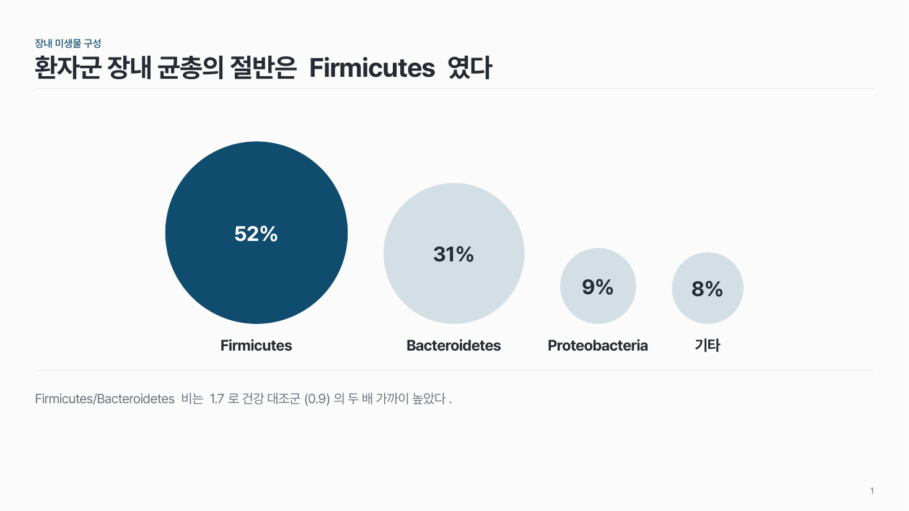
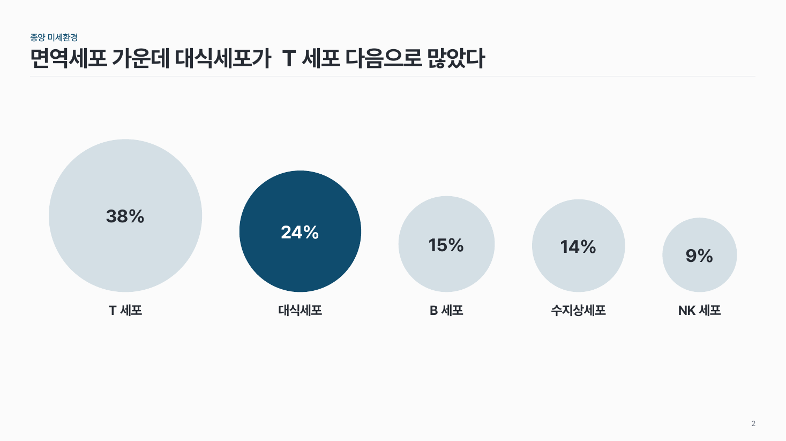
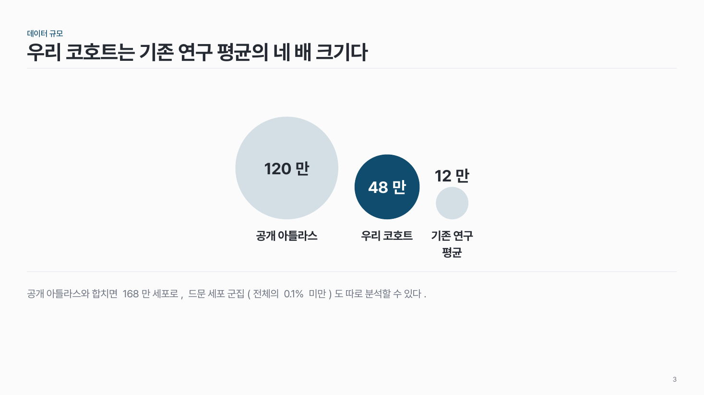

버블 비율 data-03
값 3–5개를 원 면적으로. 바닥을 맞추고 핵심 원 하나만 진하게.

이 시안
4개 · 가장 큰 원 강조 + 결론 줄
슬라이드 제목: 환자군 장내 균총의 절반은 Firmicutes 였다
언제 쓰나
정확한 수치보다 누가 얼마나 큰가가 메시지일 때요. 균총 구성비, 면역세포 비율처럼 값이 몇 개 안 될 때 막대보다 눈에 잘 들어와요.
구성
- 원 3–5개를 바닥선에 맞춰 나란히.
- 원 안에 수치, 아래에 이름.
- 핵심 원 하나만 주조색, 나머지는 옅은 색.
지킬 것
- 원 면적을 값에 비례시켜요. 지름이 아니에요.
- 가장 큰 원과 가장 작은 원은 면적 10배 이내.
- 이름은 8자 안팎.
하지 말 것
- 원마다 다른 색을 칠하지 않아요.
- 원끼리 겹쳐 수치를 가리지 않아요.
더 볼 게시물 Instagram @peedori_
시안 비교
같은 내용을 옵션만 바꿔 그렸어요. 그림을 누르면 크게 보여요.
A4개 · 가장 큰 원 강조 + 결론 줄
슬라이드 제목: 환자군 장내 균총의 절반은 Firmicutes 였다

B5개 · 가운데 원 강조
슬라이드 제목: 면역세포 가운데 대식세포가 T세포 다음으로 많았다

C3개 · 값 차이 10배 (상한)
슬라이드 제목: 우리 코호트는 기존 연구 평균의 네 배 크기다